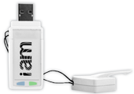

Token iAM

El token iAM (yo soy) desarrollado por la empresa Bit4id es un dispositivo USB basado en un microprocesador criptográfico que permite gestionar de manera completa la identidad digital de cualquier persona. Incorpora una memoria micro-SD con aplicaciones para firma electrónica, verificador de documentos firmados electrónicamente, cifrado, navegador portable, etc. Además el dispositivo incluye una tarjeta SIM en la que pueden ser almacenados certificados personales de usuario, que serán requeridos por aplicaciones web seguras, como por ejemplo en la e-Administración.